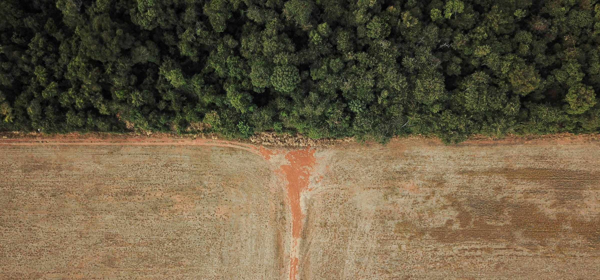

Dimensões dos impactos das transições de terras na Amazônia e no Cerrado
Este projeto visa prever e compreender as causas e impactos da supressão da vegetação nativa nos biomas do Cerrado e da Amazônia, considerando as dimensões ambientais e antrópicas. Os resultados proporcionarão uma compreensão mais profunda das relações entre as mudanças no uso da terra, fatores ambientais e dinâmicas sociais relacionadas à supressão da vegetação nativa.

Modelagem com dados de cobertura da terra e biodiversidade na Amazônia
Esse é um exercício de modelagem, em que utilizei dados publicados com o artigo científico: Linking land-use and land-cover transitions to their ecological impact in the Amazon. Com esse conjunto de dados, eu desenvolvi modelos de predição para estimar variáveis de biodiversidade, e modelos de classificação para estimar classes de cobertura da terra.

Estimando o efeito de incêndios florestais sobre as estimativas de carbono florestal na Amazônia Brasileira
Neste experimento, estou tentando estabelecer um projeto de pesquisa para estimar o efeito dos incêndios florestais sobre a biomassa acima do solo na Amazônia. As estimativas de biomassa são derivadas do produto GEDI L4A. O desenho experimental é baseado em dados de cobertura da terra e fogo do Mapbiomas.

Criação de vizualizações acessíveis para emissões de gases de efeito estufa no Brasil
Este projeto consiste em criar vizualizações de dados acessíveis, utilizando dados de emissões do [Observatório do Clima] (https://www.oc.eco.br/en/). Este é um exercício para melhorar a acessibilidade de documentos acadêmicos em geral, seguindo diretrizes e ferramentas para facilitar a disponibilidade de informações para todos.
Cálculo do tempo de conversão de florestas nativas para agricultura na Amazônia Brasileira
Este projeto consiste em calcular o tempo de conversão de florestas nativas para agricultura, utilizando dados de classificação da cobertura da terra do Mapbiomas.
